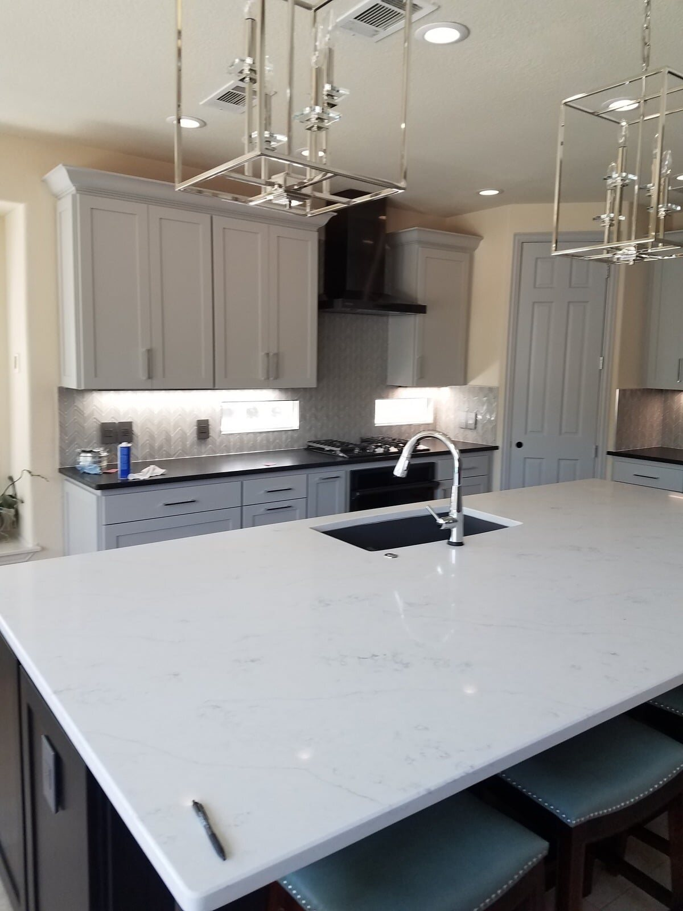
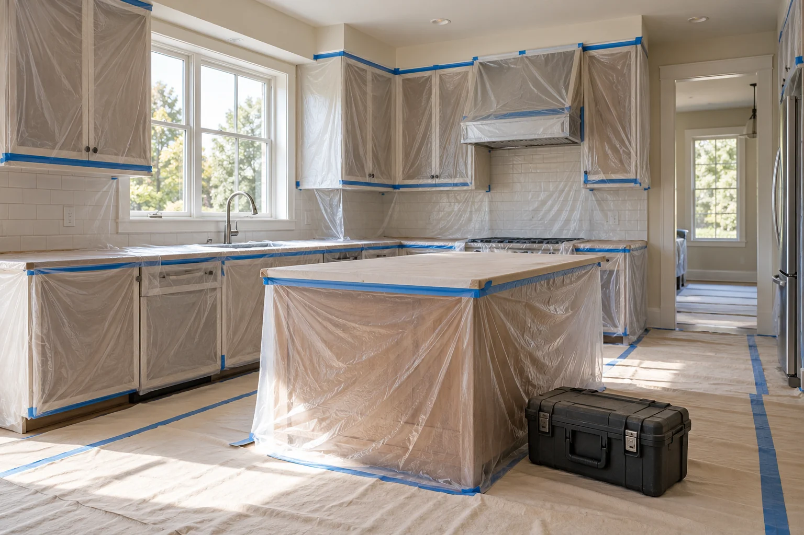
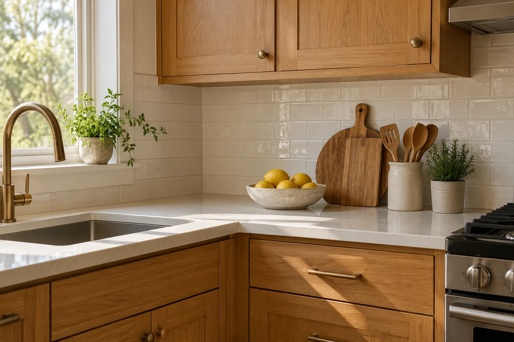
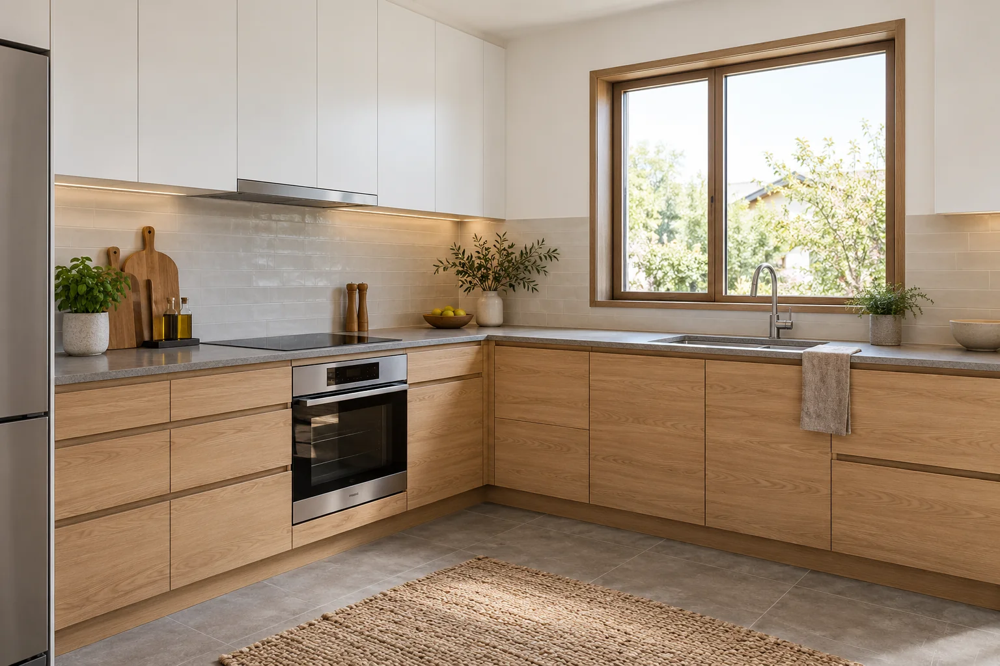
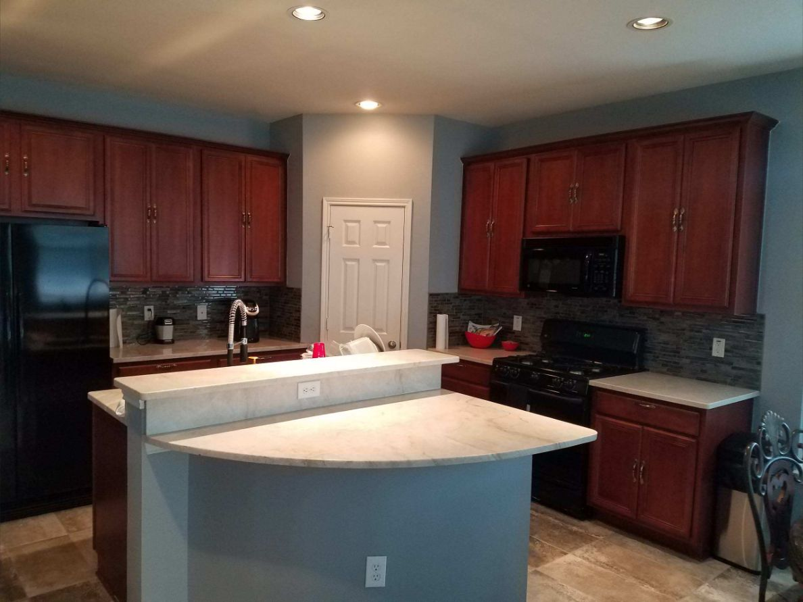
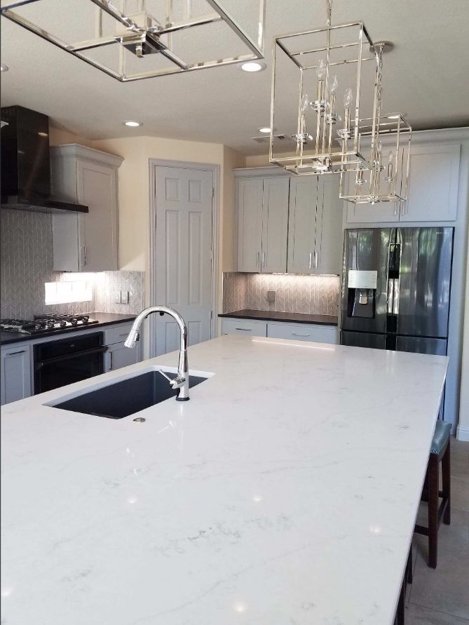
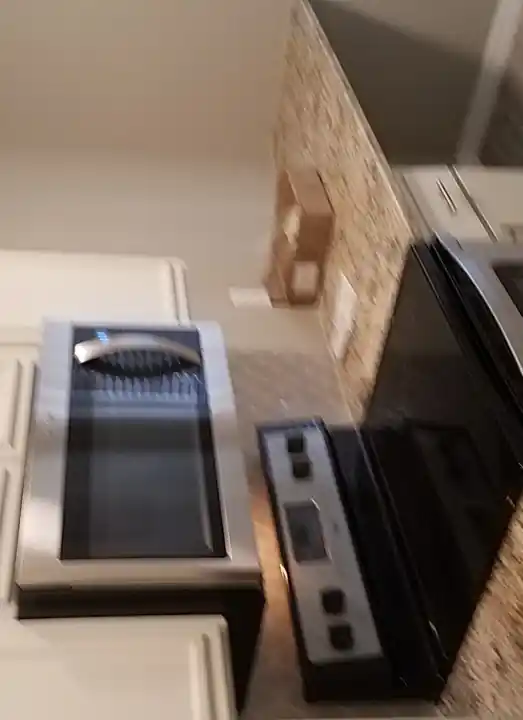

A range feature changes the pattern
A feature behind the range needs alignment with the hood, countertop and surrounding cabinets. Review the focal point and the material’s suitability for the exposure before finalizing decorative inserts.
Midlothian, Texas
Professional kitchen backsplash installation with subway tile, glass mosaic, patterned tile, hexagon tile, decorative accents and clean finishing around cabinets, outlets and countertops.
Backsplash installation / Midlothian, Texas
For backsplash installation in Midlothian, this guide focuses on a range feature changes the pattern. Use it to discuss the conditions at your property and compare the proposed work.
A feature behind the range needs alignment with the hood, countertop and surrounding cabinets. Review the focal point and the material’s suitability for the exposure before finalizing decorative inserts.
If work will occur in stages, define the temporary condition between phases and protect completed surfaces before the next trade arrives. Coordinate material batches, storage and the approvals that release the next stage.

Daltile
Tile options differ in size, finish, water absorption and approved location. A wall-only tile is not automatically suitable for a floor.
Selection check
Review the exact tile’s use rating, wet-area suitability, substrate, grout and movement-joint requirements before selecting the pattern.
Daltile’s standard tile warranty is limited; specialty collections and system programs have separate terms. Request the exact product warranty.
Cambria
Quartz slabs are a countertop option for kitchens, vanities and selected interior surfaces.
Selection check
Confirm the selected design, slab layout, edge, sink support, seams and fabrication details. Follow the manufacturer’s care and heat-protection instructions.
Cambria publishes a transferable Full Lifetime Warranty subject to its written terms, eligibility and exclusions.

Schluter KERDI
A sheet membrane can form the waterproof layer beneath a compatible tiled shower assembly.
Selection check
Seams, corners, penetrations, drain connections and the selected mortar must follow the system instructions. Tile and grout alone are not the waterproof layer.
KERDI membranes have a 10-year limited warranty; eligible complete-system programs may differ. Confirm all component and installation requirements.

Luna project reference
Existing Luna portfolio photograph from Dallas–Fort Worth. It is not a product photograph or a claim that the work was completed in this page’s city.
Explore documented project work →A feature behind the range needs alignment with the hood, countertop and surrounding cabinets. Bring photographs, dimensions and any relevant previous repair records to the discussion.
Compare ceramic and porcelain tile, quartz surface slabs, bonded sheet waterproofing. Specify the selected components and the preparation they require.
Center the layout on the actual installed appliances and hood. Coordinate material batches, storage and the approvals that release the next stage.
Agree on safe interim conditions, usable areas, material storage, trade handoffs and how completed work will be protected. Identify any component that must be installed together rather than treating every item as independently schedulable.
Center the layout on the actual installed appliances and hood. The written scope should also identify the selected products, work boundaries, required trade coordination and approval steps for changes.
No. These are references for comparing product categories. Availability, suitability, the exact model and the actual supplier must be confirmed for the property. A reference does not imply certification, stock or a brand affiliation.
Manufacturer coverage: Terms apply to the exact product and eligible application. Material coverage, complete-system programs and installation workmanship are different obligations. Request the current written warranty and care instructions; a warranty term is not a guaranteed service life. Generic illustrations are original explanatory artwork, not branded packaging.
Discuss the conditions at your property.
Include the project address, relevant photos and your priorities.
Service planning imagery
These service-appropriate scenes support planning conversations. Representative illustrations are labeled, and genuine portfolio photographs are identified as Dallas-Fort Worth references rather than work in this page's city.

Representative illustration
Protected kitchen work area before backsplash installation.
This representative illustration is not a photograph of a Luna job or work completed in Midlothian.

Representative illustration
Countertop and wall-backsplash layout concept.
This representative illustration is not a photograph of a Luna job or work completed in Midlothian.

Representative illustration
Kitchen finish concept showing backsplash context.
This representative illustration is not a photograph of a Luna job or work completed in Midlothian.

Existing Luna portfolio photograph
Finished kitchen cabinetry reference from the Luna DFW portfolio.
Existing Luna General Contractors portfolio photograph from Dallas-Fort Worth. It is not represented as work completed in Midlothian.

Existing Luna portfolio photograph
Finished kitchen and quartz-island reference from the Luna DFW portfolio.
Existing Luna General Contractors portfolio photograph from Dallas-Fort Worth. It is not represented as work completed in Midlothian.
A Midlothian backsplash with an accent band needs more layout decisions than a single-field tile. The estimator must confirm band height, interruptions at outlets, transitions near the range and how the accent meets corners or exposed edges.
Luna's documented Midlothian case records a gray subway installation with metallic mosaic accents, providing a useful local example without assuming that another kitchen needs the same pattern or materials.
Verified Local Project
The recorded project added horizontal metallic accent bands within a gray subway-tile field. The layout was completed around cabinets, countertops and electrical components to add contrast without overwhelming the existing finishes.

Accent material can be thinner or thicker than the field tile and may arrive on flexible sheets. The scope should address surface alignment, band height, sheet seams and transitions before setting begins. A dry layout helps reveal awkward fragments at corners and keeps the feature line continuous across visible sections.
Explore kitchen remodeling services → Request a property-specific estimate →
The Midlothian estimate should distinguish field tile from accent material and specify alignment, transitions, edge treatment, grout, wall preparation and protection.
Many standard backsplash projects can be completed in about two days, although detailed patterns, repairs, specialty materials or extensive cuts may require additional time.
Yes. The layout can be measured and cut around cabinets, countertops, outlets, switches, windows and appliances for a finished installation without replacing the entire kitchen.
Common options include ceramic and porcelain subway tile, glass mosaic, marble-look tile, hexagon tile, patterned tile and decorative accent pieces.
Yes. Luna General Contractors serves homes and businesses throughout Midlothian and nearby communities.
Professional, reliable and detail-oriented from planning through completion. The craftsmanship and finished work exceeded expectations.
Read review summary · Source: Google →Top-notch communication, professionalism and attention to detail on a Jack-and-Jill bathroom renovation.
Read review summary · Source: Google →“Fair price for great work. Definitely recommend them for general repairs and maintenance.”
View public recommendation →Read customer feedback with the original source identified for every review.
View All Customer Reviews →Start Your Project
Tell us about your property and the work you have in mind. We can discuss the scope, access, material selections and next steps.